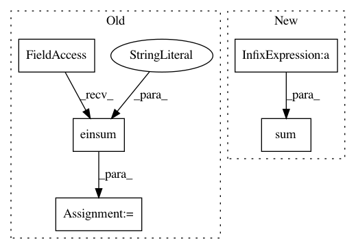

315990901cdcdca241013ee5e6c581391bae2523,geomstats/geometry/spd_matrices.py,SPDMetricBuresWasserstein,inner_product,#SPDMetricBuresWasserstein#Any#Any#Any#,697
Before Change
ones = gs.ones(eigvals.shape)
vertical_index = gs.einsum("...i,...j->...ij", eigvals, ones)
horizontal_index = gs.einsum("...j,...i->...ij", eigvals, ones)
coefficients = 1 / (vertical_index + horizontal_index)
result = gs.einsum("...ij,...ij,...ij->...",
coefficients, rotated_tangent_vec_a,
After Change
eigvecs)
coefficients = 1 / (eigvals[..., :, None] + eigvals[..., None, :])
result = gs.sum(coefficients * rotated_tangent_vec_a *
rotated_tangent_vec_b, axis=(-2, -1)) / 2
return result
def exp(self, tangent_vec, base_point):
In pattern: SUPERPATTERN
Frequency: 4
Non-data size: 5
Instances
Project Name: geomstats/geomstats
Commit Name: 315990901cdcdca241013ee5e6c581391bae2523
Time: 2020-12-15
Author: yann.thanwerdas@gmail.com
File Name: geomstats/geometry/spd_matrices.py
Class Name: SPDMetricBuresWasserstein
Method Name: inner_product
Project Name: geomstats/geomstats
Commit Name: 4ae6fa81fcf27c93c7f1ea6906e20b2e57311e4a
Time: 2020-02-20
Author: nicolas.guigui@inria.fr
File Name: geomstats/learning/frechet_mean.py
Class Name:
Method Name: variance
Project Name: geomstats/geomstats
Commit Name: 1c80400f1883de27ac700c870c3b3f8e86af731d
Time: 2020-03-01
Author: nicolas.guigui@inria.fr
File Name: geomstats/learning/frechet_mean.py
Class Name:
Method Name: variance
Project Name: geomstats/geomstats
Commit Name: cd593f08b5715da43fee424dfd199f5fa4c2ede1
Time: 2021-03-24
Author: nicolas.guigui@inria.fr
File Name: geomstats/geometry/spd_matrices.py
Class Name: SPDMetricAffine
Method Name: _aux_inner_product